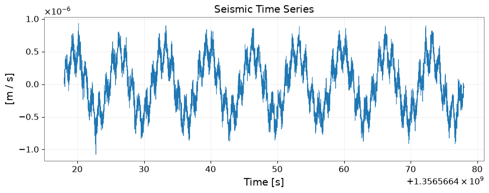
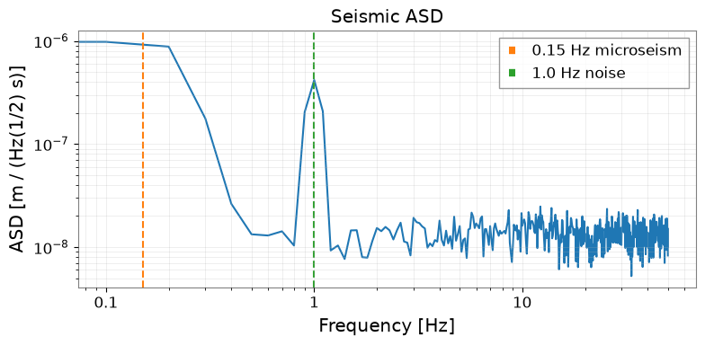
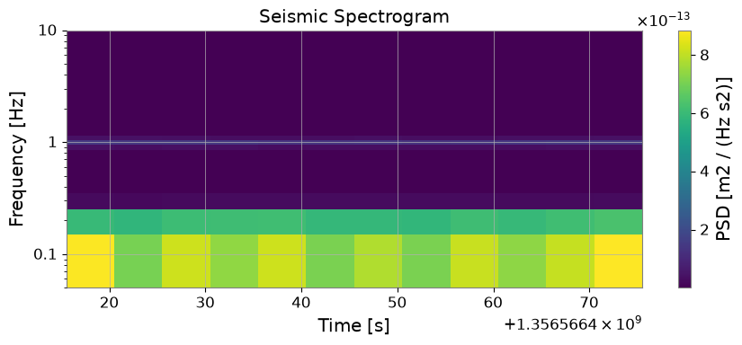

ケーススタディ: ObsPy 連携による地震データ解析#
このチュートリアルでは MiniSEED / SAC / FDSN 形式の地震データを読み込み、gwexpy で解析する方法と、obspy ↔ gwexpy 間の双方向変換を解説します。
重力波検出器科学での用途#
KAGRA・LIGO・Virgo 環境モニターの地震計データ読み込み
地震ノイズ解析と検出器感度へのカップリング
地震チャンネルと重力波データのクロス相関
レガシー移行に関する注記： コードが obspy.read() を直接呼び出し、その後に手動の numpy 処理を行っていた場合は、TimeSeries.read(format='miniseed') と gwexpy の高水準な信号処理メソッドに置き換えてください。 現在の公開 interop インターフェースについては Interop / 変換ガイド および Interop API リファレンス を参照してください。
import matplotlib.pyplot as plt
import numpy as np
from astropy import units as u
from gwexpy.timeseries import TimeSeries
# ObsPy is an optional dependency
try:
import obspy
OBSPY_AVAILABLE = True
print(f"ObsPy version: {obspy.__version__}")
except ImportError:
OBSPY_AVAILABLE = False
print("ObsPy not installed. Install with: pip install obspy")
print("This tutorial will show the API but skip cells requiring obspy.")
ObsPy version: 1.5.0
1. ルート 1: TimeSeries.read(format='miniseed')#
gwexpy の I/O レイヤーは MiniSEED ファイルを直接読み込み、正しい単位と時間軸を持つ TimeSeries を返します。
# --- Route 1: Read MiniSEED via gwexpy I/O ---
# Replace the path below with your actual MiniSEED file
#
# ts_seismic = TimeSeries.read(
# "path/to/seismic.mseed",
# format='miniseed',
# )
#
# Or read SAC format:
# ts_seismic = TimeSeries.read("path/to/seismic.sac", format='sac')
#
# For FDSN web service (requires network access):
# ts_seismic = TimeSeries.read(
# "IU.ANMO.00.BHZ",
# format='miniseed',
# start=1234567890,
# end=1234568090,
# )
print("Route 1: TimeSeries.read(format='miniseed') or format='sac'")
print("This returns a TimeSeries with GPS time axis, units, and channel name.")
Route 1: TimeSeries.read(format='miniseed') or format='sac'
This returns a TimeSeries with GPS time axis, units, and channel name.
2. ルート 2: from_obspy_trace() – obspy オブジェクトから変換#
すでに obspy.Trace / obspy.Stream がある場合は from_obspy_trace() で gwexpy に変換します。
if OBSPY_AVAILABLE:
# Simulate obspy workflow
# Normally: st = obspy.read("seismic.mseed")
# Here we create a synthetic trace for demonstration
rng = np.random.default_rng(0)
fs_seis = 100.0 # 100 Hz seismometer
n_seis = 6000 # 60 seconds
t_seis = np.arange(n_seis) / fs_seis
# Simulate seismic noise + Rayleigh wave
seis_data = (
1e-7 * rng.normal(0, 1, n_seis) # broadband noise
+ 5e-7 * np.sin(2 * np.pi * 0.15 * t_seis) # 0.15 Hz microseism
+ 2e-7 * np.sin(2 * np.pi * 1.0 * t_seis) # 1 Hz noise
)
stats = obspy.core.Stats()
stats.network = "K1"
stats.station = "KAGRA"
stats.location = "00"
stats.channel = "BHZ"
stats.sampling_rate = fs_seis
stats.starttime = obspy.UTCDateTime("2023-01-01T00:00:00")
stats.npts = n_seis
tr = obspy.Trace(data=seis_data, header=stats)
print("obspy Trace:", tr)
# Convert to gwexpy TimeSeries
ts_seismic = TimeSeries.from_obspy_trace(tr, unit=u.m / u.s)
print("\nConverted to TimeSeries:")
print(f" t0 = {ts_seismic.t0:.3f}")
print(f" dt = {ts_seismic.dt}")
print(f" N = {len(ts_seismic.value)}")
print(f" unit = {ts_seismic.unit}")
print(f" name = {ts_seismic.name}")
else:
# Fallback: create synthetic data without obspy
rng = np.random.default_rng(0)
fs_seis = 100.0
n_seis = 6000
t_seis = np.arange(n_seis) / fs_seis
seis_data = (
1e-7 * rng.normal(0, 1, n_seis)
+ 5e-7 * np.sin(2 * np.pi * 0.15 * t_seis)
+ 2e-7 * np.sin(2 * np.pi * 1.0 * t_seis)
)
ts_seismic = TimeSeries(
seis_data,
dt=(1/fs_seis)*u.s,
t0=0*u.s,
unit=u.m/u.s,
name="K1:KAGRA.BHZ",
)
print("Created synthetic TimeSeries (no obspy)")
obspy Trace: K1.KAGRA.00.BHZ | 2023-01-01T00:00:00.000000Z - 2023-01-01T00:00:59.990000Z | 100.0 Hz, 6000 samples
Converted to TimeSeries:
t0 = 1356566418.000 s
dt = 0.01 s
N = 6000
unit = m / s
name = K1.KAGRA.00.BHZ
3. 地震データの信号処理#
TimeSeries に変換すると、gwexpy のすべての信号処理メソッドが利用可能になります。
fig, ax = plt.subplots(figsize=(10, 4))
ax.plot(ts_seismic.times.value, ts_seismic.value, lw=0.6)
ax.set_xlabel("Time [s]")
ax.set_ylabel(f"[{ts_seismic.unit}]")
ax.set_title("Seismic Time Series")
ax.grid(True, alpha=0.3)
plt.tight_layout()
plt.show()

# Bandpass filter to isolate seismic bands
ts_lf = ts_seismic.bandpass(0.05, 0.5) # 0.05–0.5 Hz: Earth's hum + microseism
ts_hf = ts_seismic.bandpass(1.0, 10.0) # 1–10 Hz: human-induced noise
fig, axes = plt.subplots(3, 1, figsize=(10, 8), sharex=True)
axes[0].plot(np.arange(len(ts_seismic.value)) / fs_seis, ts_seismic.value, lw=0.5, label="Raw")
axes[1].plot(np.arange(len(ts_lf.value)) / fs_seis, ts_lf.value, lw=0.8, label="0.05–0.5 Hz", color="C1")
axes[2].plot(np.arange(len(ts_hf.value)) / fs_seis, ts_hf.value, lw=0.8, label="1–10 Hz", color="C2")
for ax in axes:
ax.set_ylabel(f"[{ts_seismic.unit}]")
ax.legend(loc="upper right")
ax.grid(True, alpha=0.3)
axes[2].set_xlabel("Time [s]")
fig.suptitle("Seismic Data: Bandpass Filtering")
plt.tight_layout()

# Amplitude Spectral Density
asd = ts_seismic.asd(fftlength=10.0, overlap=0.5)
fig, ax = plt.subplots(figsize=(8, 4))
ax.loglog(asd.frequencies.value, asd.value)
ax.set_xlabel("Frequency [Hz]")
ax.set_ylabel(f"ASD [{asd.unit}]")
ax.set_title("Seismic ASD")
ax.grid(True, which="both", alpha=0.3)
# Annotate microseism peak
ax.axvline(0.15, color="C1", linestyle="--", label="0.15 Hz microseism")
ax.axvline(1.0, color="C2", linestyle="--", label="1.0 Hz noise")
ax.legend()
plt.tight_layout()

# Spectrogram: Time-frequency map
sg = ts_seismic.spectrogram2(fftlength=10.0, overlap=5.0)
fig, ax = plt.subplots(figsize=(9, 4))
mesh = ax.pcolormesh(sg.times.value, sg.frequencies.value, sg.value.T, shading="auto")
ax.set_yscale('log')
ax.set_ylim(0.05, 10)
ax.set_xlabel("Time [s]")
ax.set_ylabel("Frequency [Hz]")
ax.set_title("Seismic Spectrogram")
plt.colorbar(mesh, ax=ax, label=f"PSD [{getattr(sg, 'unit', '')}]")
plt.tight_layout()
plt.show()

4. obspy に戻す変換#
gwexpy での処理後、さらなる地震学的解析（例：装置応答の除去、FDSN へのアップロード）のために、結果を obspy に戻すことができます。
import warnings
warnings.filterwarnings("ignore", category=UserWarning)
warnings.filterwarnings("ignore", category=DeprecationWarning)
if OBSPY_AVAILABLE:
# Convert processed TimeSeries back to obspy Trace
tr_filtered = ts_lf.to_obspy_trace()
print("Converted back to obspy Trace:", tr_filtered)
# Or use the generic to_obspy dispatcher
from gwexpy.interop import to_obspy
tr_generic = to_obspy(ts_lf)
print("via to_obspy():", tr_generic)
else:
print("obspy not available – skipping round-trip conversion")
Converted back to obspy Trace: .K1.KAGRA.00.BHZ.. | 2023-01-01T00:00:00.000000Z - 2023-01-01T00:00:59.990000Z | 100.0 Hz, 6000 samples
via to_obspy(): .K1.KAGRA.00.BHZ.. | 2023-01-01T00:00:00.000000Z - 2023-01-01T00:00:59.990000Z | 100.0 Hz, 6000 samples
5. マルチチャンネル地震解析#
3 成分地震計（X, Y, Z）のように複数チャネルを同時に扱う場合は、TimeSeriesMatrix を使うと一括処理できます。
from gwexpy.timeseries import TimeSeriesMatrix
rng2 = np.random.default_rng(1)
# Three-component seismometer
components = ['BHX', 'BHY', 'BHZ']
data_3c = np.stack([
seis_data + 1e-8 * rng2.normal(0, 1, n_seis),
seis_data * 0.8 + 1e-8 * rng2.normal(0, 1, n_seis),
seis_data * 1.2 + 1e-8 * rng2.normal(0, 1, n_seis),
], axis=0)[:, np.newaxis, :] # (3, 1, n)
tsm_3c = TimeSeriesMatrix(
data_3c,
dt=(1/fs_seis)*u.s,
t0=0*u.s,
units=np.full((3, 1), u.m/u.s),
)
tsm_3c.channel_names = components
# ASD for all 3 components at once
asd_3c = tsm_3c.asd(fftlength=10.0, overlap=0.5)
fig, ax = plt.subplots(figsize=(8, 4))
for i, comp in enumerate(components):
ax.loglog(asd_3c[i, 0].frequencies.value, asd_3c[i, 0].value, label=comp)
ax.set_xlabel("Frequency [Hz]")
ax.set_ylabel("ASD [m/s/√Hz]")
ax.set_title("3-Component Seismometer ASD")
ax.legend()
ax.grid(True, which="both", alpha=0.3)
plt.tight_layout()

6. 移行ガイド: obspy + numpy → gwexpy#
移行前（obspy + scipy）:
import obspy
from scipy import signal
import numpy as np
st = obspy.read("seismic.mseed")
tr = st[0]
# Manual bandpass
tr_bp = tr.copy().filter('bandpass', freqmin=0.1, freqmax=1.0)
# Manual ASD with scipy
f, psd = signal.welch(tr.data, fs=tr.stats.sampling_rate, nperseg=1024)
asd = np.sqrt(psd)
# Manual spectrogram
f, t, Sxx = signal.spectrogram(tr.data, fs=tr.stats.sampling_rate)
移行後（gwexpy）:
from gwexpy.timeseries import TimeSeries
ts = TimeSeries.read("seismic.mseed", format='miniseed')
# Or: ts = TimeSeries.from_obspy_trace(obspy.read("seismic.mseed")[0])
ts_bp = ts.bandpass(0.1, 1.0)
asd = ts.asd(fftlength=10.0, overlap=0.5) # FrequencySeries with units
sg = ts.spectrogram2(fftlength=10.0, overlap=5.0) # Spectrogram with GPS time axis
asd.plot() # Ready to plot with correct units and axis labels
まとめ#
タスク |
gwexpy API |
|---|---|
MiniSEED 読み込み |
|
SAC 読み込み |
|
obspy Trace から変換 |
|
obspy Trace に変換 |
|
帯域フィルタ |
|
ASD |
|
スペクトログラム |
|
マルチチャンネル |
要素ごとの演算を備えた |
関連チュートリアル: